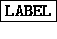
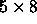

In the links panel the representation of the links can be switched on and off with the buttons and . The button forces color representation of the links (only with color monitors), and the button writes the weights of the links in the middle.
In the fonts part of the panel, the fonts for labeling the links can be selected. The button activates the

font, the button the
font